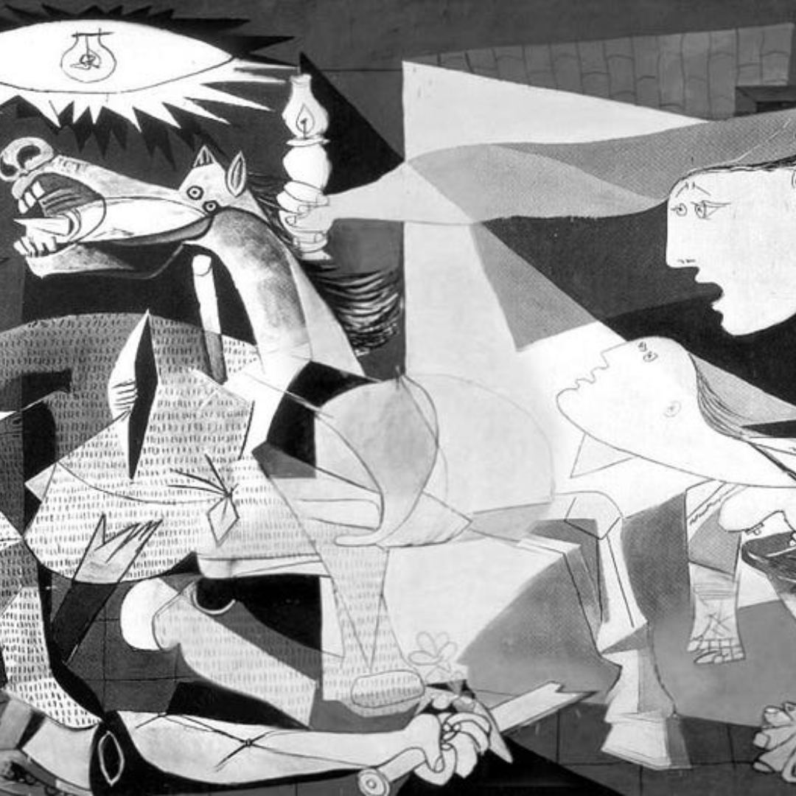
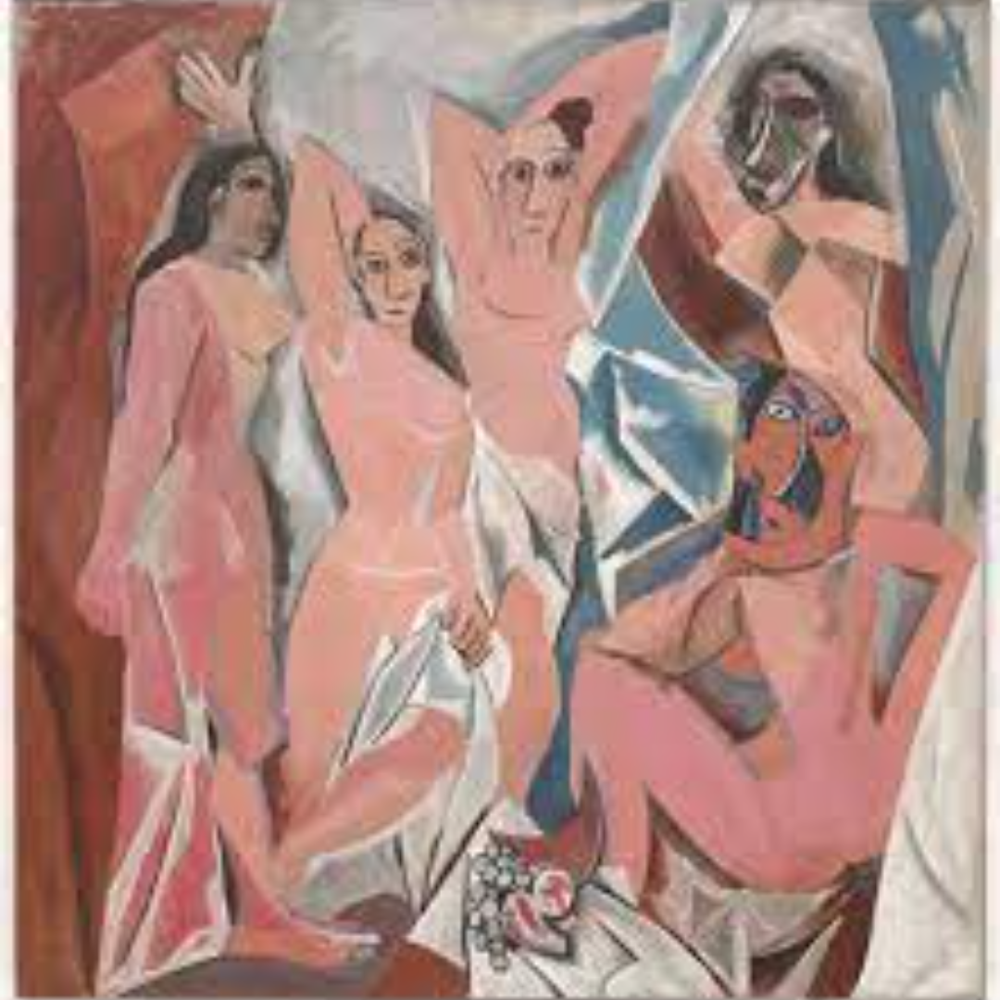
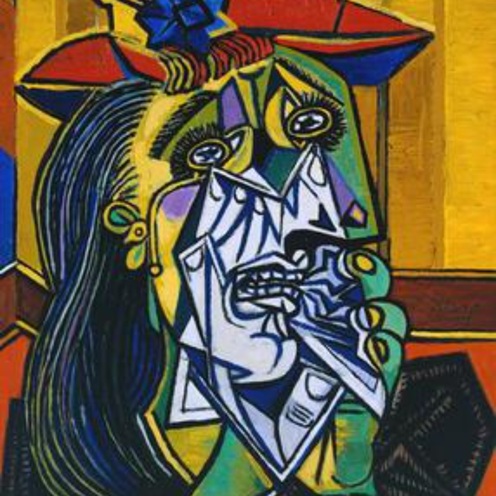
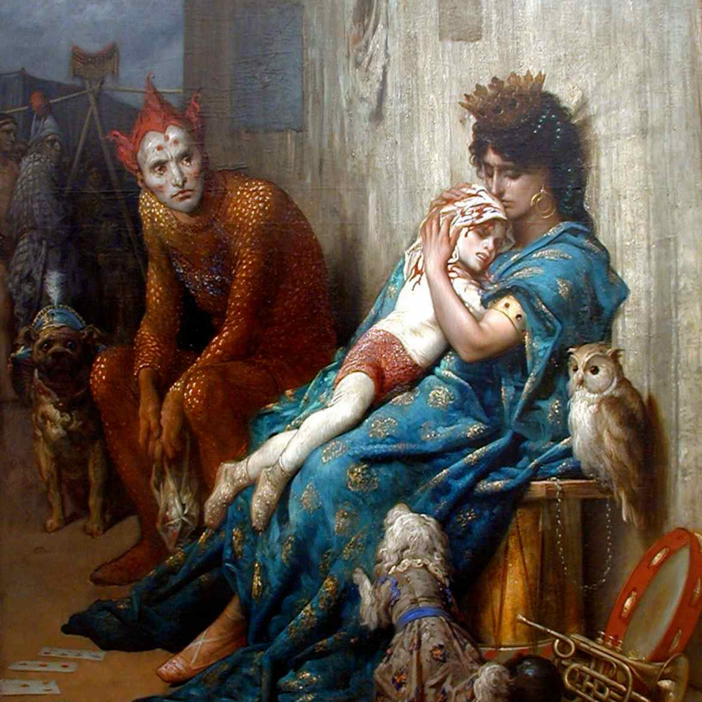

Guernica, a large black-and-white oil painting executed by Spanish artist Pablo Picasso in 1937 following the German bombing of Guernica, a city in Spain's Basque region.

Les Demoiselles d'Avignon
Les Demoiselles d'Avignon marks a radical break from traditional composition and perspective in painting. It depicts five naked women composed of flat

Weeping Woman
The Weeping Woman is a series of oil on canvas paintings by Pablo Picasso, the last of which was created in late 1937. The paintings depict Dora Maar, Picasso's mistress and muse.

Les Saltimbanques
The painting depicts a family of acrobats in which the child has suffered a fatal injury while performing, it shows his mother comforting him while he dies and his father looks on in despair. Doré said of the work: “…he is dying.

Virgin of the Rocks
The Virgin with the Infant Saint John the Baptist Adoring the Christ Child Accompanied by an Angel or La Vierge, l'Enfant Jésus, saint Jean Baptiste et un ange, also called The Madonna of the Rocks